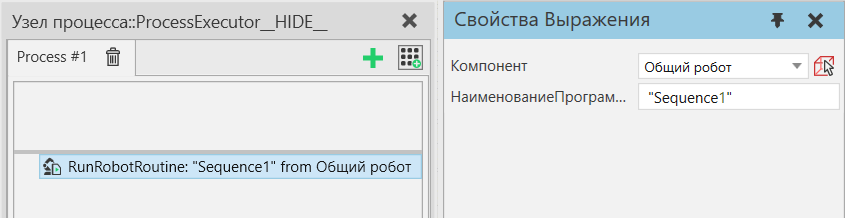

Выполнить процедуру робота |
|
Оператор Выполнить процедуру робота позволяет запустить предварительно запрограммированную процедуру на роботе. Несколько исполнителей процессов могут совместно использовать робота, используя этот тип оператора. Также можно использовать того же робота из Python, если этот код Python следует инструкциям, определенным ниже. Оператор будет ждать, пока робот не будет бездействовать, затем оценит данное выражение НаименованиеПрограммы и попытается найти подпрограмму, затем запустит подпрограмму и вернется только после того, как подпрограмма будет выполнена до завершения. Вычисление выражения НаименованиеПрограммы, а также поиск этой процедуры в исполнителе робота выполняются снова каждый раз, когда обнаруживается, что робот бездействует. Можно получить доступ к переменным продукта PM в выражении НаименованиеПрограммы.  Свойства
|